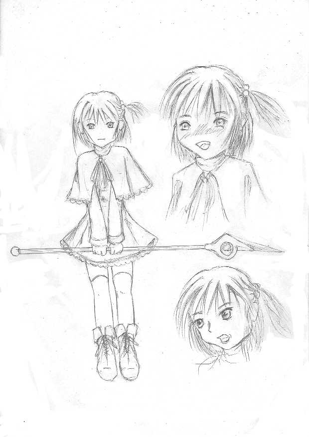

戻る
無の魔力（第４章）
作：きりきり
《パラサイト国、軍事施設地下室の祭壇》
光をさえ切った広い部屋で大勢の人間が呪文を唱えていた。
正確に言うと、呪文というよりも恨み言をぶつぶつと言っていた。
皆、みすぼらしい布きれ一枚で体を被っている。
床は、糞尿が垂れ流しになっており、異臭を放っていた。
部屋の天上には、黒く光った大きな水晶、魔水晶が宙を浮いていた。
その魔水晶は、周りにいる生物から憎悪、恐怖、不安、欲望の気持ちを吸収して魔力に変え蓄える物である。
まれに怨念のこもった無機物からも吸収できるらしい。
「ギース様、魔水晶にだいぶ魔力が溜まってきました。
既に１０万の兵力に相当致します
人間の恨みの力と言うものは恐ろしいのですな」
赤いフードとマントを纏った赤髪の男は、ギースに話しかけた。
その男の名は、ナイツ・ヒノトという。
ギースの側近の一人である。
「いいや、まただ。
この程度の魔力では、まだギリト国に対抗するので精一杯だ」
ギースは、首を横に振った。
「ギース様、お言葉ですが、我が国に攻めてきているギリト国の兵力は３万弱、余裕でギリト軍に対抗できるのでは？」
「古来の戦略の書物では、敵に真正面から交戦して簡単に勝利をもたらすには、相手の戦力の５倍程なければいけないと書かれている。
この程度では、なにかしらの奇策をたてなければ勝利を得るのは難しいだろう」
「しかし、現在の魔法文明の時代と魔法が解明されていない昔の時代とでは、状況が違うのでは？」
「まあな。たしかに今の戦争は、兵の数できまるものではない。
国の魔力の総合力で決まるものだ。
現状では、とても真正面から勝利を得ることは、できまい。
まあ、しかし負けない戦力を手に入れているのは、有り難い事だがな」
「なるほど。判りました。
引き続き、ギリト国に恨みを持っている者を増員して、ギリト国に圧勝できるくらいの魔力を魔水晶に注入致します」
「ああ、よろしく頼む。
本当は、国民全員に魔力を注入してもらいたいが、やりすぎると民衆の反対を買うだろうからな。
まあ、本格的にギリト国と交戦した時、我が国の多くの兵士は、死ぬことになるだろうから嫌でもその家族や恋人は恨みを持つだろう。ぐぅふっふ」
ギリト国との交戦は、ギースが作った魔物だけでも戦えるのだが、民衆の憎悪を増大させる為に多くの人間の兵を戦地に送り込んでいた。
それは、ひとえに魔水晶に魔力を注入する為である。
「ところで、ギース様、何時頃、魔物を使って、本格的にギリト国を総攻撃を始めるのですか？
一般の人間の兵だけでは、本当にだたの無駄死にですよ」
「ああ、それは、後々伝える。
今は、何時でも戦場に遠征できる準備をしておけ」
「はい、了解しました」
《パラサイト国、東地区ギリト軍医療キャンプ場》
体に深い傷を負っている男は、少女に助けを求めていた。
「もう少し、我慢して。
すぐに傷口を塞ぎますから」
「ああ〜」
少女が男の傷口に手を当てると、傷口に樹脂のようなものが付着していった。
男は、痛みが和らいでいき、穏やかな顔になった。
「とりあえず、大丈夫ですよ。
あとは、暫く安静にしていてください」
「ああ、ありがとう」
「おーい、ディーラ、そこが終わったなら、こっちに来てくれ」
あごひげを生やした中年の男は、看護服を着た少女ディーラを呼んだ。
ここでは、戦争で傷ついた多くの者達が、治療を受けている。
ディーラは、そういった怪我人を治療する隊員の一人であった。
叔父クリムの仇を取りたいディーラは、今の治療部隊に配置が決った時、落胆した。
しかし、別な部隊に移動できるよう今は頑張っている。
戦況によっては、兵の配置が変わるかもしれないと軍の上官に言われたからだ。
「はーい、ちょっと、待ってください」
ディーラは、走って男のいる場所に向かった。
「おお、来たか。
次の患者は、こいつだ」
金の宝飾をほどこした鎧を纏った黒髪の青年が、血みどろになっていた。
生きているのが不思議なくらいの光景だった。
「ソプラノ様、この人、パラサイト国の鎧を着ていませんか」
ディーラを呼んだあごひげの男の名は、ヒール・ソプラノという。
この現場の責任者であり、ディーラの上官であった。
「ああ、多分、敵側の人間だろうな」
「僕は、敵の人間なんが、治療したくありません」
「そうか、じゃあ、こいつを殺すのだな。
敵とは言え、それくらいの情けがあってもいいだろ。
このまま、放って置くと、こいつは何日も苦しみながら死ぬだろうからな」
「ぐぅ、わかりましたよ。
治療します。
なんで、僕がこんな事しないといけないんだよ」
ディーラは、傷ついた青年を眺めたあと仕方なくソプラノの指示に従った。
パラサイト国の軍隊を倒したいディーラにとって逆に命を助ける任務を遂行するのは、複雑な心境であった。
「ゴッホォ、ゴッホォ、俺に障るな女」
青年は、弱った体力でディーラの介抱を拒絶した。
「うるさい！
僕だってイヤなんだよ」
ディーラは、青年の言葉を無視して傷口に手を当てた。
しかし、青年は、ディーラの手をを払いのけて、攻撃魔法を掛けようとした。
「退け！ 女！」
ディーラは、咄嗟に払いのけられていない、もう片方の手で男の手を掴み、敵の魔法を無力化する合魔法を掛けた。
「やったな！」
怒ったディーラは、男の魔力を制御して、青年の顔を睨んだ。
その時、ディーラの見た光景は、体中に血を流している青年の表情が苦痛に耐えているものだった。
ディーラは、同情心が生まれたのか胸が苦しくなって、助けたいという気持が沸き起こった。
「暴れないでね。
今、治してあげるから」
ディーラは、男の残りの魔力を操作して回復魔法を掛けた。
男は、力が抜けて気を失ってしまった。
《パラサイト国、夢幻城の庭》
「今の所、順調みたいですわね」
風の神官長ボルト・シーラーは、キル・ウィングに話しかけた。
「それは、どうかな。
たしかに我が軍は、パラサイト軍を蹴散らしているが、わざとやられに来ているような気もする。
なにか奇策を立てているのかもしれん」
「あなたは、あいかわらず心配性ですわね。
まあ、そこが良い所でもありますけどね」
「戦争では、注意深くなくちゃ生き残れないからな」
「そうでしたわね。
それより、話は変わりますけどディーラちゃんの件、わたくしがお願いした通りにしてくれたかしら」
「ああ、クリム殿の養子の件か。
シーラー殿の言った通り、配置を例の医療キャンプにしておいたぞ」
「そう。ありがとう。
でも、私的なことに権力を使うなんで、私も悪い上官ですわね」
「そうだな。
兵士の特別扱いは、軍の指揮の妨げとなるな。
しかし、戦友のクリム殿のご親族の事だからな。むやみに死なせたくないのは、私も同じだ」
「この事をディーラちゃんが知ったら怒るでしょうね」
「そうだろうな。
なにせ、クリム殿の恨みを晴らす為に兵士に志願したのだからな」
「そうですわね
でも、このまま戦争が終わらなければ判らないですわよ。
私も昔は、ディーラちゃんと同じ医療キャンプに配置されていましたのよ。
でも、ある時、その医療キャンプにいきなり敵がやって来て、私が敵を全滅させたら、王の目に止まって、いつの間にか今の地位にいるんですから。
あの時、患者に同情しなければ、わたくしは、もっと気楽な生き方が出来ていたでしょうね」
「ふっ、それは運がなかったな。だが、私はシーラー殿が神官長になってくれて助かったけどな。
シーラー殿の才能が無駄なままになるのは、もったいない話だ」
「ウイングさん、早くこの戦争を終わらせたいですわね」
シーラーは、苦笑いを浮べ、話題を変えた。
「そうだな。
まあ、敵のアジトを発見したら、たぶん終わるだろう」
「問題は、ギースですわね」
「そうだな。我ら神官長がパーティを組んで倒すのが得策だろう。
一人や二人では、危険な相手だからな。
しかし、見つけるのは、至難の技だな。
奴の魔力も厄介だが、頭の良さは、もっと厄介だ」
「クリムさんの恨み晴らしたいですわね」
「恨みで闘うのは、良くない。
冷静な判断なしで勝てる相手でないのはわかっているだろう」
「そうでしたわね」
「おっと、もう時間だな。
それじゃ、俺は、軍の作戦会議に行ってくる」
ウィングは、魔法で出した立体映像の時計を見て言った。
「わたくしも行きますわ。
現在、どういう状況が知りたいですからね」
シーラーとウィングは、会議している部屋へと向かった
《パラサイト国、東地区ギリト軍医療キャンプ場》
「……ん、んん」
ディーラによって介抱された青年は、目を覚めた。
「ここは、どこだ」
青年が目を開くと、多くの患者がベッドで寝ていて、自分もベッドで眠っていたのが確認できた。
「目が覚めたんだね」
「君は？」
「何、言っているんだよ
ついさっき、僕を攻撃しようとした奴が」
「攻撃？ …あ、そうか、あの時の女か！
済まない、気が立っていたのでつい無礼な事をしてしまったようだ。
…いや、良い訳はよそう。女性に攻撃するなんで最低な男だな俺は…」
青年は、心底、済まなさそうな顔をしていた。
「もう、いいよ。
それより、僕を女扱いするのはやめてくれない」
「そうだな。こんな戦地にいるんだ男も女もないな。
しかし、助けてくれた者に攻撃をしたんだ。
無礼に変わりない。すまなかった」
「君、名前は、なんで言うの？」
「俺の名は、…ヒ、ヒーポックだ
君の名は？」
「僕の名前は、ディーラだよ。
あ〜あ、どうしてお前なんか助けたんだろ。
叔父さんの仇なのに」
「ディーラ、君は、今の戦争で大事な人を失ったのか？」
「違うよ。
パラサイト国の城に話し合いに行って、殺されたんだ」
「もしかして、ギリト国の神官のクリム殿の事か？」
「お前、なんで、そんな事知っているんだ」
「あ、・・・いや、我が国でも話題になっていてな。
クリム殿を倒した事は、パラサイト国の民衆は、誇りに思っているんだ。
強国に屈しなかったとな」
「クソォ、お前ら、叔父さんのことを馬鹿にしやがって！」
ディーラは、歯を噛み締めて、泣き出したくなるのに耐え早足で男の前から消えた。
男は、暫し呆然としていた。
《パラサイト国、東地区ギリト軍医療キャンプ場、ソプラノの専用の小部屋》
「どうしたんだディーラ」
ソプラノは、いきなり部屋に入ってきたディーラに何事かと聞いてみた。
「やっぱりパラサイト国の人間の面倒なんでイヤです」
「駄目だ
あの男が回復して、捕虜収容所に連れて行かれるまで我慢しろ。
ここに来た怪我人は、如何なる者も治療する。
それが、ここの規律だ」
「どうして、そんな規律を決めたんですか？
ソプラノさん」
「ふっ、昔は俺もお前と同じ考えだったな。
前の大戦の時、変わった女が俺の所に赴任してきてな。
その女は、かなりのお人よしで、運ばれてきた怪我人は、敵味方問わず熱心に看病していた。
それを見た俺も彼女一人に負担を掛けるのは、嫌だから手伝ったんだ。
その時の俺は、敵の人間なんて俺と同じ生き物だと思っていなかったが、看病している内に同じ赤い血を流す人間だと気付いたのだ。
敵の首を見て喜んでいた俺だったのに不思議な感じがしたよ。
しかし、そんな事をやっていたら、その時の上官に滅茶苦茶怒られてな。
俺は、もう敵を助けないと誓ったが、彼女は、怒って辞めてしまった。
普通はそんな簡単に兵役なんで辞められないのだが、彼女の知合いがちょっとしたお偉いさんでな。
簡単に辞めてしまったよ。女という理由もあったかな。
本当は、辞めたくなかったのだろうが、敵の人間が放置される状況は、耐えられなかったのだろうな。
俺は誓ったよ。偉くなったら彼女の理想をかなえてあげようとね」
「僕は、ソプラノさんやその女の人のようにやさしくないですよ」
「いいや、やさしいはずさ。
なにせ、その女は、お前の母親だからな」
「僕の母さん・・・」
「そうだ。
まったく、あんな怠け者の男と結婚しやがって、俺も狙っていたのになあ。」
「ソプラノさんもお母さんの事、好きだったの？」
ソプラノの顔は、急に赤くなった。
「うるさい！
もう話は終わりだ。用が済んだのだから、怪我人の様子をさっさと見に行って来い」
ソプラノに言われ、ディーラは、怪我人を収容している部屋へと向かう事にした。
《パラサイト国、東地区ギリト軍医療キャンプ場の病室》
「ぎゃっ！」
「お〜、ディーラちゃん、今日も可愛いな」
「ガイさん、お尻触らないで下さい」
「ちょっとくらい、いいだろう。
お前らの仕事は、命の危険がないだろうからな。
俺達は、いつ死ぬのかわからないんだ。
せめて、休息の間くらい優しくしてくれよ」
「だからって、やらしいことは、辞めてください」
「つれない事を言うなよ」
「今は、忙しいから、これ以上、ちょっかい掛けないで下さい」
「ちぇ、つまんねえなあ」
ディーラはガイから離れて、苦しそうにしている傷ついた男に近寄った。
「ミストさん、今、楽にしますね」
ディーラは、ミストという男に手を当てた。
「怖い、怖いよ。
もう、俺を痛めつけないくれ」
「しっかりして、ここは安全ですから」
「だらしねえなあ。それでも最強のギリト兵の一員か」
ガイは、ミストの様子を見て、罵った。
「ちょっと、ガイさん。
治療の邪魔をしないで下さい。」
「でもなあ、こんなダラシナイ奴、見てると俺まで情けなくなってよぉ」
「ふん、本当の死線を体験したことがない奴が、よく言う」
横からヒーポックが、ガイに話しかけてきた。
「なんだとぉー。貴様！？
俺はなあ、お前らパラサイト国の兵士や怪物達を沢山、殺した男だぞ！
その俺をひよっこだとでもいうのかぁ！」
「集団で少数をいたぶっただけだろ。
まあ、戦略だから仕方ないのだろうかな。
しかし、勇敢ぶるのは、どうかな」
「き、貴様ぁー！！
今すぐ、俺と勝負しろ。
一瞬で殺してやる。」
「いいだろう」
ヒーポックは、ベッドから立ちあがろうとした。
しかし、傷口が深く床に転んでしまった。
「ふん、ダサい奴だぜ」
ガイは、倒れている男に魔法で具現化させた氷のヤリを突こうとした。
「ガイさん、やめて！」
ディーラは、ヤリを持っているガイの手を掴んでガイの魔法の制御を奪った。
「なんでだ。魔力が思いとおりに制御できなくなりやがった」
「その有り余る元気、借りるよ」
ディーラは、空いた手をヒーポックに向けて、回復魔法を掛けた。
「ありがとう。楽になった」
ヒーポックは、ディーラにお礼を言った。
「まだ傷口が深いんだから、喧嘩するんじゃないよ」
「すまん。つい、こういう男を見ると苛立ってしまってなぁ」
「ガイさんもやめなよ。
敵とは言え、怪我人を倒すのは男らしくないよ」
「わかったから。俺を自由にしてくれ。
力が抜けて如何しようもできないんだ」
「わかったよ」
ディーラは、掴んでいたガイの手を放した。
「クソォ、パラサイト兵、あとで覚えてろよ」
「ガイさん」
ディーラは、怖い顔でガイを睨んだ。
「あっはは、ディーラちゃん、わかってるよ」
ガイは、渋々自分のベッドに戻った。
「どうして、俺を助けたんだ。
お前は、俺が嫌いなのだろ？」
「ああ、嫌いだよ。
でも、無抵抗な人間を虐める奴も嫌いなだけだよ」
「ふっ、結構、ガイとか言う者より、お前の方が男らしいな」
「え！？ 本当か？」
ディーラは、男の発言に顔が和らいだ。
元男であったディーラにとっては、結構嬉しい言葉であった。
「なんか嬉しそうだな。
てっきり 、怒られるものだと思った。
お前の怒った顔を見たくて、からかったが、笑った顔もいいな。」
「ふん、僕は元は男だよ」
「何？ どう言う事だ。
どう見ても女にしかみえないぞ」
「魔法で女になったんだよ」
「女になりたかったのか？」
「ちが〜う！！
さっき使った合魔法を覚える為に女になったんだ。」
「ああ、先ほどガイに使った法術か。
たしかにシンプルだか応用範囲の広そうな魔法だ。
その魔法を覚える為に女になったのも頷げる
しかし、その魔法は女じゃないと使えないのか。
たしかに闇魔法のように女性向きの魔法の気がするかな」
「違うよ。先生が女じゃないと教えてくれなかっただけだよ」
「その先生、知識は尊敬できるが、道徳的に問題があるかもな」
「う〜ん、まあね」
ディーラは、ヒーポックのルーンの評価に苦笑いで答えた。
「ふっ、しかし、信じられないなあ。
こんな、魅力的な娘が男だったなんで」
ディーラは赤面した。
「な、何言ってるんだよ。
僕は、可愛くなんがない」
「すまん」
「もう、いいよ。
それより、自分のベッドに戻らないと」
「ああ、わかった」
ヒーポックは、ベッドに戻る為、床から立ち上がった。
しかし、いまだ傷口が深く一歩、動いたら、激痛が走り床に転びそうになった。
ヒーポックが床に落ちそうになった時、ディーラは、ヒーポックの肩を担いだ。
「う、重たい。
なんで、僕はこんな奴、助けているだろう」
「悪いなぁ」
「別にいいよ仕事の内だから」
「ああ、そうだな。
それでも礼がいいたい。
まさが……、こんな戦地で天使に会えるとは思わなかったよ」
「なに、言って……」
ヒーポックの言葉に気を取られたディーラは、ヒーポックをベッドに移動しようとした時、バランスを崩して男と一緒に上半身だけベッドに倒れてしまった。
ディーラは、唇に柔らかい感触を感じた。
目を開けると男の顔が近くにあった。
「あぅ……、あああ。ぎゃあ〜！！」
ディーラは、すぐに男から離れて、爆風とともにその場から消えてしまった。
男も暫し放心状態となった。
《パラサイト国、東地区ギリト軍医療キャンプ場の医療員の寝室》
ディーラは、自分の寝室でベッドに顔を埋めて泣いていた。
「うわ〜ん。男とキスしてしまったよ。
しかも、敵の男なんかに…」
暫く、ディーラが泣いていた時、女の人が部屋に入ってきた。
「ディーラさん、こんな所でなにやっているの。
あのパラサイト国の男の容態が急変したのよ。
今、先生が看ているけど、ディーラさんを呼んでるわよ」
「あ、すみません。
でも、アイツが…。
さっきは、そんなに酷い状態じゃなかったのに」
ディーラは、涙を拭いて病室に行く準備をした。
「ディーラさん！？
泣いちゃって、どうしたの。」
「なんでもないです。
それよりも病室に急ぎましょう」
「ええ、そうね」
ディーラは女の手を握って、瞬間移動で病室へと向かった。
《パラサイト国、東地区ギリト軍医療キャンプ場の病室》
「すみません。先生」
「病人をほったらかして何をやっていたんだ。
この男は、死にそうだったんだぞ。
敵だからといって仕事の手を抜く奴は、ここでは、いらないぞ」
ソプラノは、険しい剣幕でディーラを叱った。
「す、すみません」
「ゴッホォ、ゴッホォ、彼女を攻めないで下さい。
俺の不注意で彼女を傷付けてしまったんです。
彼女は、けっして、怠慢でここを離れていたわけではないです」
ヒーポックは、苦しみに耐えてディーラを庇った。
「わかった。
いいから、しゃべるな。
そうだよな。たしかにディーラは、よほどのことがない限り手を抜く奴ではないからな。
俺も気が動転していたようだ」
「いえ、悪いのは僕です。
ぼくがあんなことくらいでショックを受けてたから」
ディーラは、自分の責任感のなさを悔やんでいた。
「もう、気にするな。
それよりも、この男は、お前に任せた。
俺は、ミストさんも看ないといけないからな」
「はい、わかりました」
「本当に済まんな」
ヒーポックは、痛さに耐えてディーラに謝った。
「いいよ。ぼくこそ、ご免なさい」
「ああ、・・・眠くなってきた」
「駄目だよ！
頑張って、死んだら駄目だよ」
ディーラは、精一杯、回復魔法を掛け続けていたが、ヒーポックの生気は、段々弱ってきた。
それでも、諦めずディーラは、魔力を振り絞り男に回復魔法を掛けて続けていたが、ヒーポックの生気は今にも費えようとしていた。
「お願い。死なないで！！」
ディーラがヒーポックに向かって叫んだ時、魔力が急激に上昇してきた。
「え？
これは、ディーラの魔力だよな」
「先生、如何かしましたか？」
近くいた女性の看護員が、様子のおかしいソプラノに質問した。
「いや、ディーラの魔力が急激に上がっているんだ」
「そう言えば、そうですね
・・・え、うそ！？
こんな魔力、私、感じたことない！」
「ああ、神官長級かもな。
俺も信じられない」
「…先生」
ソプラノが看病している傷ついた男は、ソプラノを呼んだ
「なんですか？
ミストさん」
「なんが気持ちが和らいできました。
いままで、恐怖が精神を支配していたのが、牢獄から解放されらように安らいできました。
ああ、こんな気持ちのいい気分は、久しぶりだ」
「この魔法は、あの回復系の最上級魔法か！？」
「あの『絶対なる安静』という魔法ですか？
でも、あの魔法は、複数の人間が陣形を組まないと発動できないじゃないですか」
「そうだ、魔力が莫大で制御力が優秀な者が集まらなければ発動できない魔法だ」
「そ、そんな信じられない」
「ああ……。
俺の手番は、なくなったようだな」
ソプラノは、うわの空で答えた。
この奇跡の出来事に感動しきっていた。
《パラサイト国、東地区ギリト軍医療キャンプ場の医療員の寝室》
「ん…、アレ、僕、どうしてベッドで寝ているんだ？」
ディーラは、いつのまにかベッドで眠っていた。
「起きたか。ディーラ」
「ソプラノさん？」
「よく頑張ったな。
お前のお掛けで、あの男の様態は、回復した」
「そうですか。良かった。
でも、どうして、僕は、ここにいるんですか」
「ああ、お前は、あの男の治療中に倒れたんだ。
最上級の回復魔法『絶対なる安静』を発動したんだ。
無理もない」
「僕は、そんなに凄い魔法を使ったんですか？」
「魔法を発動する前、お前の魔力が急激に上がりだしてなあ。
そうお前の叔父クリムくらいの魔力まで上がったんだ」
「嘘、僕にそんな魔力があったんですか？
そういえば、あの時、無意識に自分の知っている限りの魔法をつかったような気がする。
今から思えば、僕の魔力では、使えない魔法も試して成功していたなあ」
「うん、おそらくお前の急激の魔力の増大は、後天的な魔力だろうなあ。
普通は、先天的に魔力が決まるのだが、まれに後から魔力が上がる奴がいると聞いたことがる。
しかし、そんな奴、俺はお前が始めてだがなあ」
「じゃあ、今の僕は、叔父さん位の魔力があるんですね」
「そうとも限らないぞ。
俺の見るところ、今のお前は、全然、魔力がないからなあ。
ためしに魔力を上げてみろ」
「うん」
ディーラは、魔力を限界まで上げてみた。
だが、今まで通りの普通の魔力しか上がらなかった。
「やはり、駄目みたいだな」
「ええ〜。
せっかく、凄い魔力が手に入ったとおもったのに」
ディーラは、首を落とし非常に残念そうであった。
「どうやら、奇跡だったらしいな」
「そんな〜」
ディーラは、ガックリ肩を落とした。
「ソプラノさん、もう僕は元気になったので病人の看病に行ってきます」
「ああ、たのむ」
ディーラは、とぼとぼと一人事を言いながら病室まで歩いた。
《パラサイト国、東地区ギリト軍医療キャンプ場の病室》
「ヒーポック、元気になったみたいだね」
病室に戻ったディーラは、ヒーポックに話しかけた。
「ありがとう。
おかげで怪我する前よりも元気になったような気がするよ」
「だからって、まだ無理したら駄目だよ。
まだ、完全に治っているわけじゃないんだから」
「わかってる。
しかし、敵の俺にここまで面倒を見てくれるとは、お前も変わってるなあ」
「僕もそう思うよ。
本当、なんでお前のような悪い奴らの面倒をみているんだろう」
「ふっ、きっと、優しい性格だからだろ」
ディーラの顔が赤くなった。
「変なこと言うな。僕は優しくなんかないよ。
仕事だから仕方なくやってんだ」
「すまん。すまん。そうだな。
しかし、惜しいな。
お前が敵じゃなければ、嫁に貰っている所だ。
お前なら、きっと立派な子孫を残してくれそうだしな」
「よ、嫁？子孫！！」
「ああ。
できれば今から俺と付合ってほしいものだ。
お前は、俺が今まで見てきた女の中でも一番だ。
元、男だろうと関係がない。
天使は、性別がないと言われているが、なんとなくわかる気がする」
「何言っているんだ。男と結婚なんでする訳ないだろ。
それにお前は、敵だろ。
お前は、元気になったら、捕虜の刑務所に入る事になるんだぞ」
「そんな事はないさ。
警備の薄い今ならお前を連れて俺の国に帰る事もできるぞ」
「お、お前、逃げる気か？」
「あっはっは！ 冗談だ。
俺は、惚れた女を困まらせるようなことはしないさ。
もうしばらく、ここで休んでいるよ」
「冗談に聞こえなかったよ。
もし、お前が変な行動を起こしたら、僕がお前を倒すからね」
「ふっ、本当に君は元気がいいな。
よし！ 決めた。
体が全快になるまでに お前を俺に惚れさせてやろう」
「ふん、そんな事、できるわけないだろう」
ディーラはしらけた目で言った。
「そんなことはない。女は必ず強い男に惚れるものさ」
「おぇっ、お前って、古臭い奴だな。
他の女はそうだとしても僕は絶対、男なんか好きにならないからな。
特にお前なんか」
ディーラは、怒って病室を出ていった。
「ふっ、障害は高いな」
ヒーポックは、去って行くディーラの後ろ姿を眺めながら不敵に微笑した。
《パラサイト国、軍事施設の王専用の部屋》
「ポイスン王、先程、ヒーポック王子が率いる部隊が全滅したという報告きました」
ポイスン王がいる小部屋で一人の兵士が、報告に来ていた。
「そうか。それでヒーポックの行方はわかっているのか？」
「それが……、まだ確認は取れておりません。
ただいま隠密を調査にいかせております」
「ぐぅ、やはり息子が殉死した報告を聞くのは辛いものだな」
ポイスンは、歯をくいしばり悲しみに耐えた。
「ポイスン王、ご安心して下さい。ヒーポック王子は、ご無事であります」
ポイスンが気を落としているとギースが、部屋に入ってきた。
「ギース、それは本当か」
「はい、ヒーポック王子の天命は今ではないとわたくしの占いで出ておりますゆえ」
「占いが……」
ポイスンは、難しい顔をした。
「王よ、わたしの占いは絶対です。
巷の占いと一緒にしないで頂きたいですな。
私がギリト国の太古の書物を読み漁って、会得した絶対の法則なのですよ。
もっとも、ギリト国自体は、信憑性に疑問を抱いて宝の持ち腐れにしていましたがな」
「判った。私は、お前の力を信じた身、お前の言う事は全て信じよう」
「有り難き幸せで御座います。
それでは、ヒーポック王子の件、私にお任せ頂けますか？」
「それは、有りがたいが、軍事の指示は大丈夫なのか」
「敵は、まだこの基地の場所を把握しておりません。
まあ、少なくとも一週間ほどは、安全でしょう。
それまでにギリト軍からヒーポック王子を奪回致しますよ」
「うむ。わかった。
では、頼んだ」
「はっはぁ！ 早速、ヒーポック王子の行方を調査致します」
ギースは、ポイスンに礼をした後、部屋を出た。
《パラサイト国、軍事地下室の廊下》
「ギース様、ヒーポック王子は、三男で世継ぎしないと思われます。
何故、これほどご熱心になるのですか」
ギースの隣にいるヒノエは、誰もいない事を確認してから質問してきた。
「私は、この世界の王の世継をヒーポック王子にする予定だ。
占いでも国の統一後、最適な人物がヒーポック王子と出ている。
つまり、ヒーポックは、立派な偽善者という事だ。
効率よく民衆をまとめるには、偽善者が必要だからな」
「確かにヒーポック王子は、親しみやすい人物ですからな。
戦地に赴いたのも兵の苦しみを分ち合う為に出兵したと聞きます。
それに引き換え、他の王子は、えばり腐っているもの、弱気なもの、我が侭なものしがおりませんからな。
ヒーポック王子以外の王子が王位に付いたら民衆に不満が出るのは、明らかですな」
「そう言う事だ。
ヒーポック王子なら民衆の為に一生懸命、働くだろう。
私は、そのうしろで民衆の飼い方を提案をすればいいだけの話だ。
まあ、王が国の表を支配し、私が国の裏を永遠に支配すると言う事だ」
「ふっ、飼うとは、民衆が気の毒ですな」
「そんな事はない。大国のギリト国の下で飢えで苦しんでいる者もいる。
つまり貧富の差が激しいのだ。
いつか反乱が起きるだろうな。
私ならそんな効率の悪い飼い方などしない。
わたしが国を仕切るとしたら、まず、現在の産業中心に変わりつつある世界を農業中心にして、小規模化して操作しやすくなった産業を効率的に使う。
あとは、国の王になる継承者達を偽善者に育て続ければ完璧だ。
そうすれば、私は不老不死の魔法を使って、永遠の闇の王、いいや、世界で最初の生き神様になれるのだ」
「ふっ、それは、失礼致しました。
良い飼い主に永遠に育てられて民衆は、幸せですな」
「その通りだよ。がぁっはっは。」
「ギース様、それでヒーポック王子の捜索は、どう致しましょう」
「私が直接、捜索しよう。
私も元は、隠密だからな。
お前達は、それまで作戦の準備をしておいてくれ」
「はっ、かしこまりました」
ギースは、瞬間移動して、その場から消えた。
《パラサイト国、東地区ギリト軍医療キャンプ場の病室》
「ヒーポック、勝手に立ち上がらないでよ。
まだ、傷は、完全に治っていないんだから」
ヒーポックは、ベッドから出ようとしていた。
「いや、歩くだけならもう大丈夫さ。
いい加減、オムツで過ごすのは屈辱的だからな」
「仕方ないじゃないか。歩けない体なんだから」
「それもそうなんだが、君のような乙女に俺の下半身を見せるのは、失礼じゃないか」
「何、言ってるんだよ。僕は元々男なんだ。そんなもの観なれているよ」
「ふっ、俺の下半身を見て、何も感じてくれないのも男としてショックだな。
……いや、それは純真の表れなのかな」
「お前のあそこを見て何を感じるんだよ。気持ち悪いだけだ」
「おーい！ ディーラちゃん、そんな痩せ男の下半身を見てる暇があったら、俺のあそこも見てくれよ。朝から大きく腫れあがってしまって、俺では、どうしようもできないんだ。
なあ、ディーラちゃんが慰めてくれよ。」
遠くのベッドにいるガイがディーラに大声で話しかけてきた。
「ちょっと待ってください。ガイさん！」
ディーラは、純粋にガイの症状が重くなったのかと思いガイのベッドへと向かった。
「おい！ 待ってディーラ」
「なんだよ。今忙しんだよ。ガイさんの症状が悪くなったのかも知れないんだ」
「ディーラ、お前はガイの真意がわからないのか？」
「真意？ 苦しんでるんだろ」
「違う。お前にいかがわしい行為をしようとしているんだ」
「……え！？」
「おい！ パラサイト兵、邪魔するな！
ディーラちゃんもそんな敵の言う事なんで信じるなよ。
俺は、本当に苦しんでいるんだ。
ディーラちゃんは、ギリト国の正義と平和の為に戦っている俺と世界の平和を脅かしている敵の言う事、どっちを信じるんだ」
「……判りました。ガイさんを信じます」
ディーラは、暫し考えた後、ガイのもとへ向かった。
パラサイト国の人間とギリト国の人間のどちらを信用しろと言われたら、ギリト国に選択せざるをえなかった。
「待って！」
ヒーポックの忠告を無視して、ディーラは、ガイに近寄った。
「えへへ、じゃあ、見てくれよ」
そう言うと、ガイは、ズボンを降ろそうとした。
「うん」
ディーラは、ガイの股間に顔を寄せた。
するとガイは、無理やりディーラの顔を掴んで裸の下半身を触れさせようとした。
「ガイさん、何するんですか！
イヤー!！ 放して！」
ディーラが貞操の危機に瀕していたその瞬間、蛍のような形態の虫が一直線に飛んできた。
それは、ディーラとガイの近くまで接近した時、閃光とともに爆発した。
病室にいる怪我人は、何事かと一斉に爆発した場所に注目した。
「ぐわぁ〜！」
「ぎゃ〜！」
ディーラとガイは、軽く吹き飛んだ。
「お前こそ、ディーラになんて事をするんだ。
毎日、献身的に手当てしてもらっている少女にあんな事・・・。
恩をあだで返す行為、ゆるさん！」
ヒーポックは、瞬間移動でガイの近くに移動していた。
ヒーポックの顔は、凛々しい顔を赤くして鬼のような形相をしていた。
ディーラは、離れた所で放心状態になっていた。いきなりのガイの行為にディーラの精神は混乱したようだった。
「パラサイト兵、テメェかぁ〜！ 俺の楽しみを邪魔した奴わっ！
俺達は、お前らパラサイト兵を倒すのに命を掛けていて精神的に疲れているんだ。
体を休めている時くらい、女を愉しむ事の何が悪いんだ」
「ふん、ギリト兵は、女を抱かないと戦場の恐怖に勝てないのか。
思っていたよりも軟弱な集団なんだな」
「なんだと〜！！
もう、許せねぇ。今すぐ殺してやる。
どうせ、お前は、死罪になるんだ。
俺が今すぐ殺したとしても誰も文句はないだろうしな」
「俺を殺すだと？ ずいぶん元気な奴だな。
もう、退院しても良いんじゃないのか？」
「ぐっ、その減らず口がたたけなくしてやるぜ！」
ガイは、開いた右手をヒーポックに向けて呪文を唱えた。
ヒーポックのまわりに渦状の風が吹いてきて、埃が上空を舞っていた。
ヒーポックは、魔力を高めてなんとか耐えた。
「竜巻で俺を上空に吹き飛ばすつもりか。
こんな魔法、地面に潜れば簡単に防げるが、それでは、周りの患者の迷惑になるな」
ヒーポックは、病室の周りを見渡した後、手で印を結んだ。
「我が祖、太陽神様。しもべ、オーディンに命じ、氷の神獣アウドムラを地上に召喚したまえ！」
ヒーポックは、召喚魔法を唱えた。
空中に人、一人くらいが入れる異次元が開き、氷山を割って通常よりも大きい牝牛が現れた。
「アウドムラよ。この一帯の空気を冷やし竜巻を消滅させよ」
アウドムラは、首を縦に振り、竜巻目掛けて突っ込んだ。
暫くして、アウドムラの体を中心に冷気が伝わってきた。
「なんだ、あの変な牛は？ アイツのせいで急に寒くなりやがった。
ふん、しかし、それがどうした？
寒くして竜巻が防げるかよ！」
「しらないのか？
竜巻は、上空の寒い空気が生暖かい空気に触れて起こる事を…」
病室が完全に冷え切った時、先程まで勢いのあった竜巻は、完璧に消滅した。
「くそ！！」
ガイは、懲りずに竜巻を発動させる魔法を何回も行ったが、発動させる事はできなかった。
「もう、諦めるんだな。
アウドムラよ！ あの男に体当たりしろ！」
ヒーポックが命じたら、アウドムラは、ガイ目掛けて突っ込んた。
「うゎー！ ちょっと待ってくれーー」
『ドォーズンーーー！！ ドーン！１』
「ぐはぁっ！！」
アウドムラの体当たりで吹っ飛んだガイは、血へどを吐いて気絶した。
それを見届けたアウドムラは、異次元の中に消えていった。
ヒーポックは、重い体を酷使してディーラの所まで歩いた。
「ディーラ、大丈夫か？」
ヒーポックは、ディーラに手を差し出した。
ディーラは、呆然としていた。
ガイの行為が、少女の心に恐怖を与えていたようだった。
「え！？ 何？
…あ、そうか。ガイさんが僕を…」
ディーラは、状況をなんとか把握した
「まったく、無防備にも程があるぞ。
今のお前は、女ということをわすれるな」
「ふん、別にお前に助けられなくでもあんな奴、ぷっ倒していていたよ」
ディーラは、強がっていたが、体は、まだ震えていた。
「強がるな。体が震えているじゃないか」
「こ…これは、寒いからだよ。
ここは、病室だぞ。まったく、他の患者さんの迷惑じゃないか」
確かにアウドムラによって病室一帯は、凍り付いていた。
「そうだな。なんとかしないといけないな」
ヒーポックは、呪文を唱えた。
「我が祖、太陽神よ。闘神オーディーンに命じ炎の精霊ロキをこの地上に呼びたまえ」
呪文を唱え終わると空間に異次元が開き、炎を纏った凛々しい青年が現れた。
「ロキよ。この冷え切った部屋を暖めよ」
『ふん、そんな事で僕を呼び出さないでほしいな。
焚き火をすれば、いいだけの話だろ』
青年ロキは、面倒くさい顔して、文句を言った。
いや、言ったというよりも頭の中に直接、伝えるものだった。
「なんか、生意気な奴だね」
「ああ、召喚獣のくせに扱いづらい奴なんだ。
おい、ロキ！ いいから言う事聞け！
ここには、病人がいるんだ。頼む」
「僕からも頼むよ。
寒かったら患者さんが可愛そうでしょう」
『まあ、いいか。可愛い娘の頼みじゃしょうがないしな』
「お前は、召喚した俺よりもこの娘の言う事を聞くのか」
『ふん、お前の場合、もっと俺の力を発揮できる時に命令するんだな。
俺は、暖房施設じゃないんだぞ』
「ああー、わかった。わかった。
さっさとこの部屋を暖めて、異次元に帰りやがれ」
『言われなくもそうするよ』
ロキは、指を天上に掲げて小さい火の玉を出した
その火の玉は、冷え切った部屋に暖かい風を送った。
『じゃあな。
暫くしたら、この部屋は、暖かくなるぜ。』
ロキは、ディーラに接近してほおにキスした。
「あっ…」
ディーラは、ロキのキスにほおを赤らめた。
「こら！ ロキ、待て！」
ヒーポックが怒鳴っているのを尻目にロキは、笑みを浮べた後、異次元に消えてしまった。
「どう言う事だよ、あの召喚獣」
ディーラは、ほおを膨らませて怒っている。
「すまん。あの召喚獣は、悪戯好きなんだ。
まあ、優秀な奴なんだかな」
「まったく、もっとマシな奴、召喚しろよな」
「炎系の魔法を調節できる召喚獣は、アイツしか知らないんだ。
他の召喚獣を呼んでこの部屋を火事にする訳にいかないからな」
「それは、そうだけど…」
「ぐぅっ！」
ヒーポックは、床に膝をついた。
怪我をした体で召喚獣を呼んだので、急に疲れがきたらしい。
「だっ大丈夫？」
「あっはっは。ちょっと、無理をしたみたいだな。
ベッドに戻るよ」
ヒーポックは、笑みを浮べ立ち上がろうとした。
「怪我人なんだから一人で無理するなよ」
見兼ねたディーラは、衰弱しているヒーポックの肩を担いだ。
「ああ、すまない」
ディーラは、ヒーポックをベッドまで運んで寝かせた。
その後、のびているガイもベッドに運んだ。
「おしめ変えるよ」
ディーラは、ヒーポックの所に戻るとヒーポックのズボンを下ろした。
「さっき、あんな事があったのに……いいのか？」
「ふん、あれくらいの事で僕が、怖がるわけないだろ」
ディーラは、平然とした顔でヒーポックのおしめを変えた。
「強いんだなディーラは」
「僕は、怖さから逃げたくないだけだよ。
いつか、世界最強の魔法使いになりたいから」
ディーラは、真剣な顔で言った。
「ふっ、世界最強か。
お前ならなれそうな気がするよ」
ヒーポックは、笑いながら答えた。
「馬鹿にしているな。
僕が強くなったら、真っ先にパラサイト国を倒してやるからな」
「あっはっは、それは、無理だろう。一国を一人で滅ぼした勇者など今まで聞いたこともない。
どんなに強い者でも大量の軍隊の力に勝てるものなど、いるわけがない。
ましてや、俺の国だぞ」
「そんな事、わからないだろ」
「では、ディーラ、目の前の人間を殺せるのか。
例えば、今、のびているガイという奴を殺せるかな。
殺せないのなら可能性はないな」
「……」
ディーラは、黙り込んでしまった。
「たしかに極大魔法を使えば、直接、目で見なくでも多くの人間を殺せるだろう。
しかし、死を覚悟している国の軍隊を倒す事は、絶対無理だ。
歴史に残る強い戦士は、みな、自分の心を殺しで人を殺すものだ。
それは、お前の叔父であるクリム殿もそうだっただろう」
「叔父さんも…」
「ああ…、彼ほどのつわものなら多くの命を奪っただろうな。
たぶん天国には、いけんだろう」
「……」
「まあ、俺もそうだろうがな。
ただ、国の繁栄の為なら俺の死んだ後など、どうでも良い事だ」
「ふん、ぼ、僕も戦場に行ったら殺せるよ。
戦争で人が死ぬのは、当たり前だろう。
それに、敵なんだから、人間と思わなければいいんだ」
「じゃあ、将来、お前が俺を殺す時がくるかもな」
「ヒーポックを殺す……」
ディーラは、考えていなかった事を言われて戸惑ってしまった。
「ああ、逆に俺がお前を殺すかもしれん。
所詮、俺達は、恨み合う敵同士ということかな」
「……」
ディーラは、いつの間にか目に涙を溜めていた。
我慢したかったが、止まらなかった。
「ぼ、僕、ヒーポックを殺したくない。殺したくない」
「すまん。ちょっと虐め過ぎたな。その時になってみないと判らない話なのにな。
…俺もお前を殺したくは、ないさ……」
ヒーポックは、突然、ディーラに泣かれて戸惑ってしまった。
「ヒックゥ、でも、僕は叔父さんを殺したバラサイト国は、絶対ゆるせない」
「そうだな。それでいいのかもな。
俺はパラサイト国を苦しめ続けたギリト国を恨み、ディーラは、クリム殿を殺した我が国を恨む、とても許せるものではないからな。
ただ、敵同士でない今は、心置きなく愛し合おうじゃないか。
ギリト国は、嫌いだが、ディーラ、お前は好きだ」
「ふん、僕は、お前のこと嫌いじゃないけど、好きじゃないよ。
あっ、いや、友達として好きって事だよ
絶対、異性として好きって事じゃないからな」
ディーラは、涙を指で拭いて、ヒーポックの告白を断った。
しかし、さっきまで苦しがっていた顔は、笑顔になっていた。
「それでいいさ。
２日で嫌いから友達になれたんだから上出来だよ」
「ヒーポック、よく恥ずかしくもなくそんなキザな事、次から次に言えるな」
「女性を口説く時は、恥ずかしがるなと父から言われたからな」
「まったく、家族揃ってキザなのかよ」
「しかし、立派な父だ」
「ふーん、そうなんだ。
僕のお父さんは、どんな人だったんだろうな」
ディーラは、悲しい顔で考えこんでしまった。
「…すまん、嫌な事を思いださせたようだな」
「別にいいよ。僕には叔父さんがいたからね」
「そうか。クリム殿は、立派な方だったんだな」
「うん」
ディーラは、悲しげな目で頷いた。
「それじゃ。俺は暫し寝る事にしよう。
久しぶりに召喚魔法を使って疲れてしまったようだ」
「そうか。お休み」
「お休み……」
ディーラは、ヒーポックの寝顔を見て微笑んだ後、他の患者の様子を看に行った。
あとがき
えーと、まずは、読んでいただきありがとう御座いました。
この章は、もう少し、書こうと思っていたのですが、とうぶん執筆する時間が取れないかもしれませんので途中までですが、投稿することにしました。
新キャラのヒーポックですが、あえて私が嫌いなタイプにしてみました（完璧過ぎるキザなキャラを嫌いな人いませんか？）。
まあ、基本的には、良い奴なんですけどね。
次の章は、ディーラとヒーポックをいちゃつかせた後、本格的に戦争をさせようと思います。
実は、この小説は、夜夢さんの小説の二番煎じになりますが、影で陰陽五行理論を使っている場面があります。
もちろん、解釈の違いはありますか。
まあ言わなきゃ判らなかったかもしれませんけど。まだ、たいした事に使っていませんし。
でも第二章の執筆時点で考えていたんですよ。本当に。
魔法物を扱ったら、陰陽五行理論を考えるのは宿命なのかもしれませんね。
科学知識がある人なら、陰陽五行理論を使わずにもっと良いのを書けるんでしょうけど。（陰陽五行理論も詳しく勉強したら難しいですよ）
下記にこの世界での陰陽五行理論の使われ方を載せておきます。
この小説の世界での陰陽五行別属性
木 雷、風、熱、催眠（言葉ではなく微量の磁気で情報を脳に伝える場合） 生命
火 炎、光、爆発 結合
土 地面、水蒸気、灰 空間
金 氷、金属 冷気 物室
水 液体 闇 移動
光 巨大な力の五行を使う（威力）
闇 微量な力の五行を使う（制御）
瞬間移動は、人間（木）が燃やされて（火）灰（土）になり灰の成分を素粒子にして（金）、目的地まで移動して（水）人間に戻る（木）という設定にしようと思います。
合魔法は、まだ秘密です（考えが纏っていないだけですけど。現段階では、比和を取り入れようかなと思っています）
私なりの陰陽五行のイメージ
氷（金と水の間）寒い
↓
水（水と火の間）常温
↓
水蒸気（火と土の間）熱い
↓
水（土と金の間）常温
↓
氷（上に戻る）寒い
たぶん意味が判らないかもしれませんが、そういう事です（汗）
正直、まだ試行中です。書き続けて行く内にこの小説の陰陽五行論の使い方を変更するかもしれませんし排除するかもしれません。

はっきり言って手抜きです。ディーラのイメージの補完になれれば幸いです。
戻る
□ 感想はこちらに □